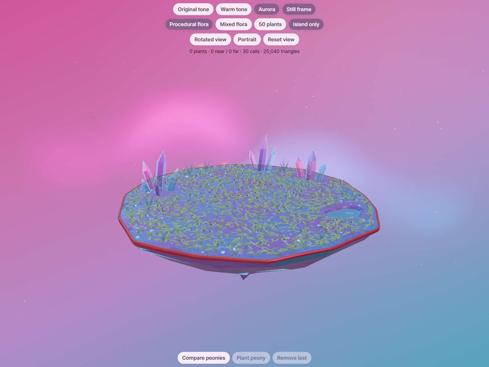
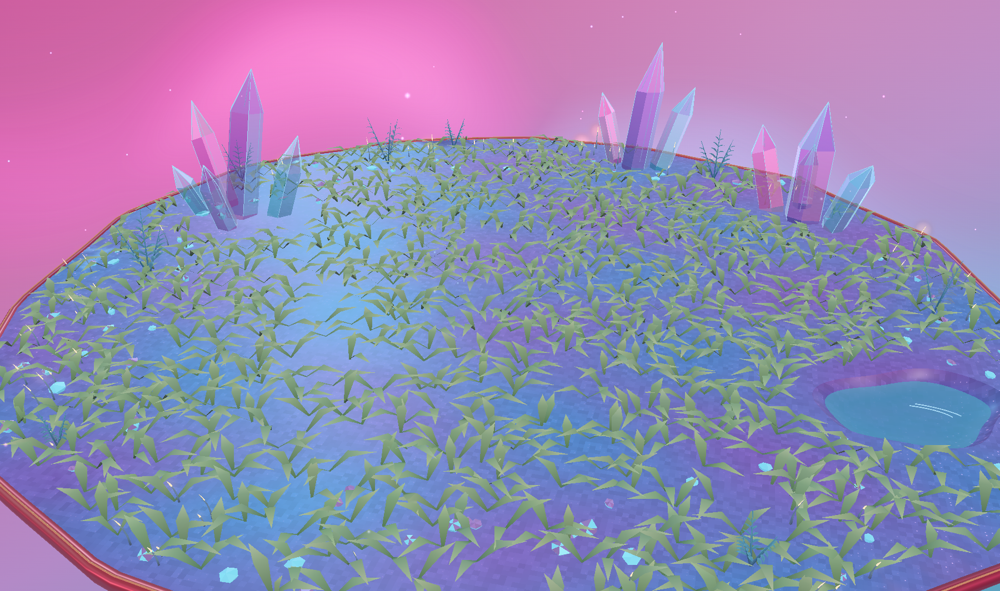
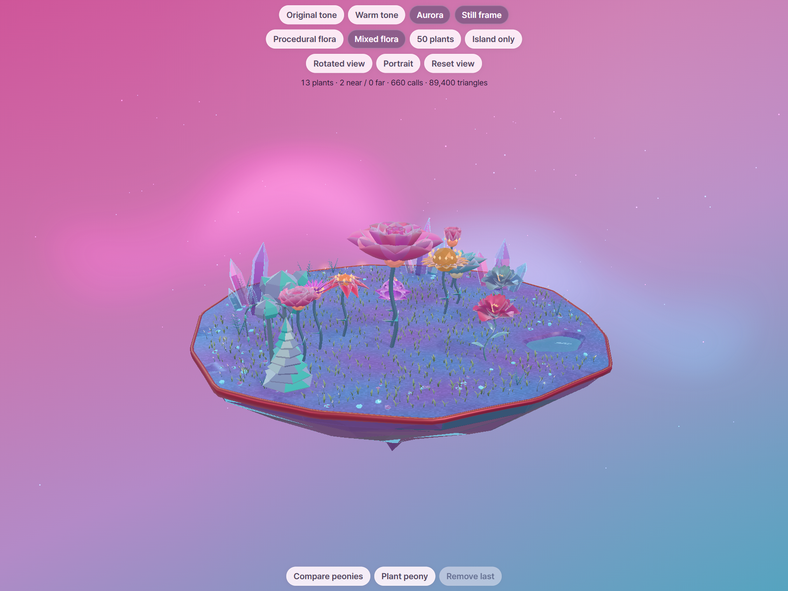
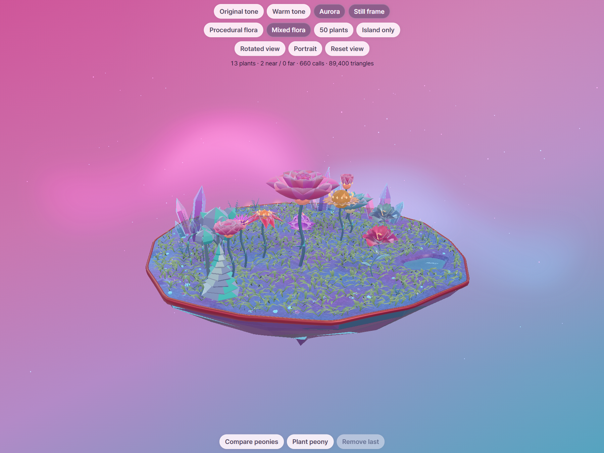
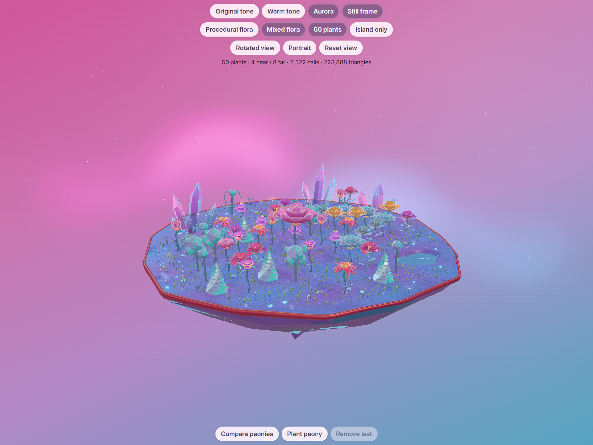
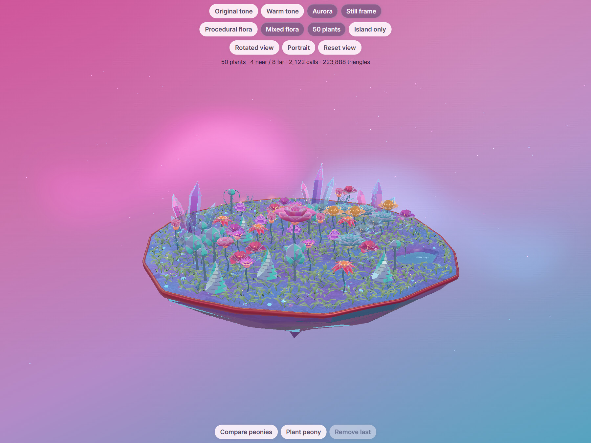
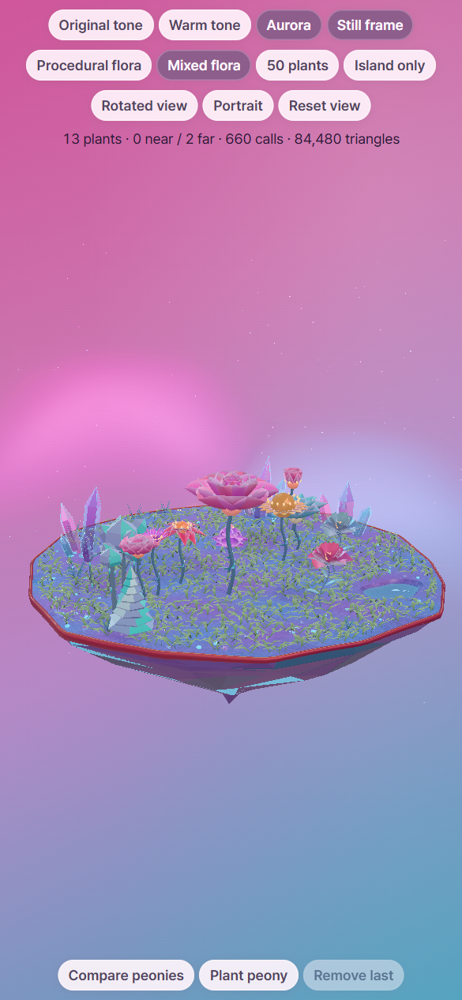
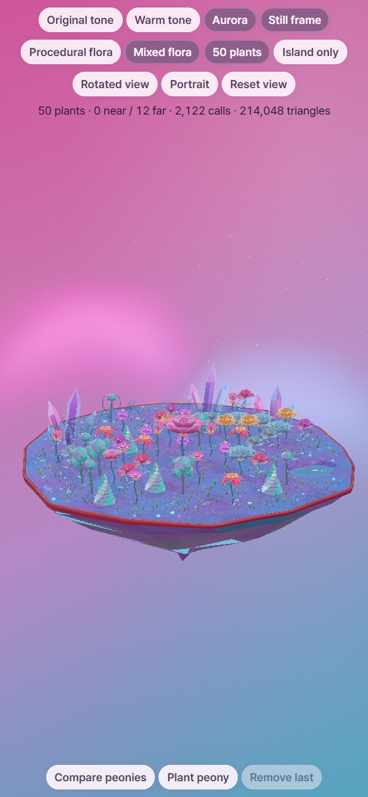
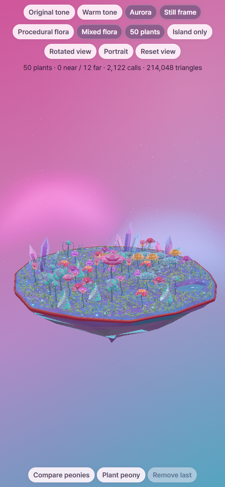

Grass resized to half the large preview
The final blades use half the height and horizontal dimensions of the large candidate shown in chat: height 0.075–0.12 units and horizontal scale 0.26–0.31. There are still 1,000 clumps, 6,000 grass triangles and one grass draw call. The larger candidate was discarded.
These matched views compare the previous committed short grass (2af54a7) with the final resized ribbons. The pond, rim, crystal formations, planting positions and centered underside remain unchanged. Validation report
Island only
Before · 2af54a7 Final · resized ribbons
Final · resized ribbons
Grass close-up
Before Final
Final
Mixed garden
Before
Final
50 plants
Before
Final
Mobile portrait
Before Final
Final
Mobile portrait · 50 plants
Before
Final